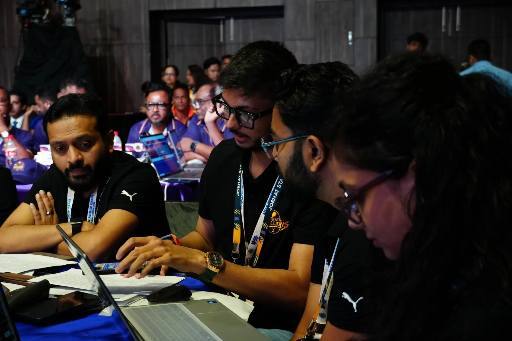
Jorhat Stallions
Sports Marketing Management
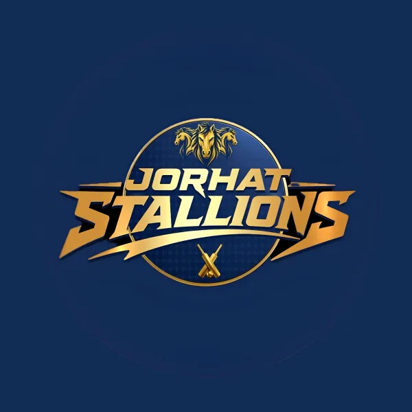
Bringing it to Life
Through Behind-The-Scenes Stories, Matchday Coverage, Player Features, And Social-First Content, We Transformed Every Moment Into An Opportunity To Engage The Cricket Community.
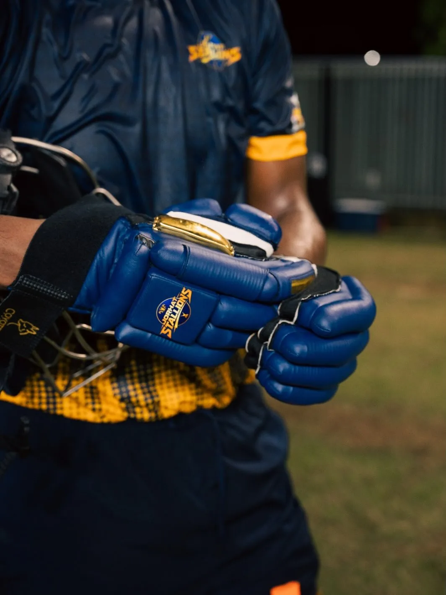
The Idea
Create A Digital Presence That Captured The Passion Of The Team Beyond Match Day. Every Piece Of Content Was Designed To Strengthen The Connection Between The Players, The Supporters, And The Tournament.
Campaign Reels
Services
Impact
Brand
Strategy
8.2M +Views Generated
Creative
Direction
240%Growth In Reach
Content
Production
3.1M+Organic Impressions
Short-
Form Video
180+Content Pieces
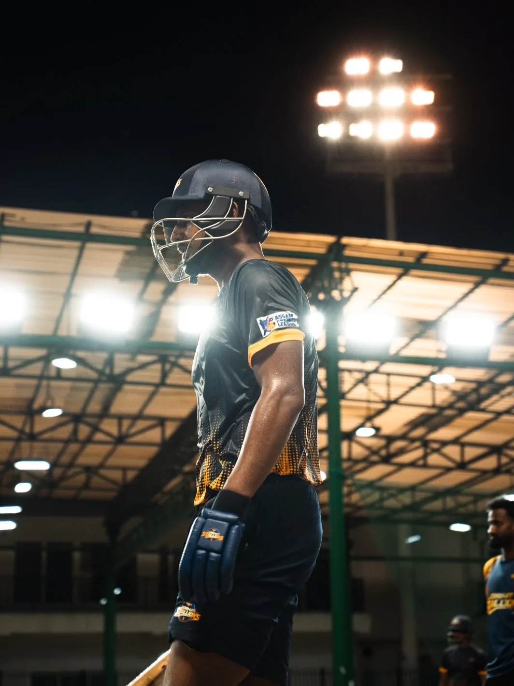
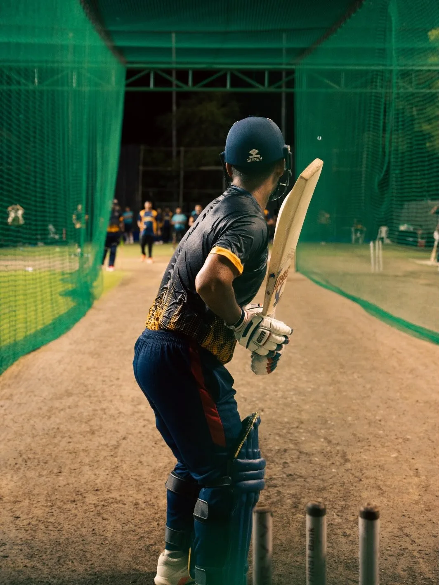
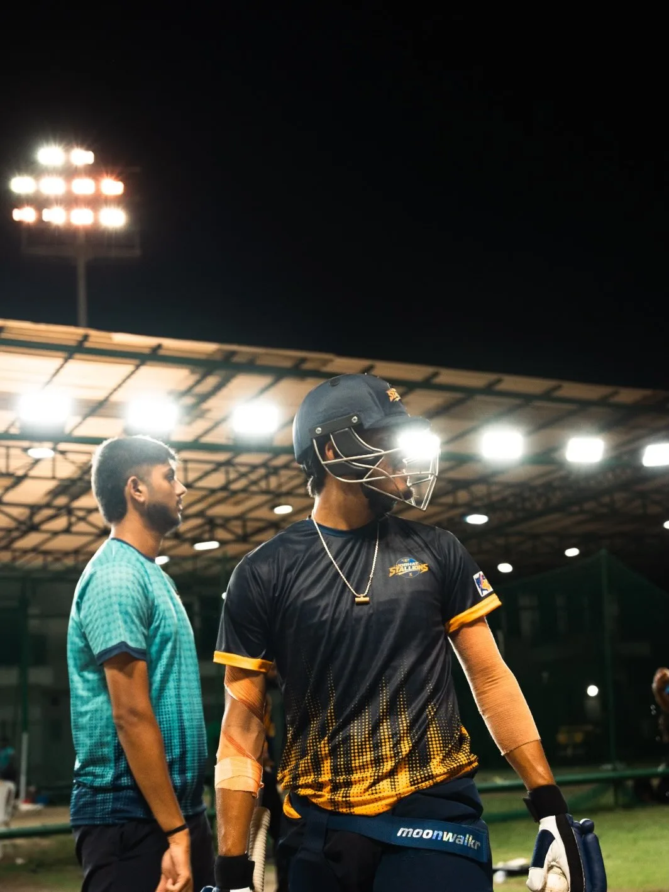
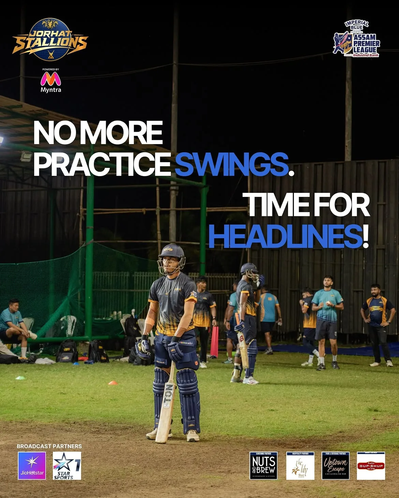
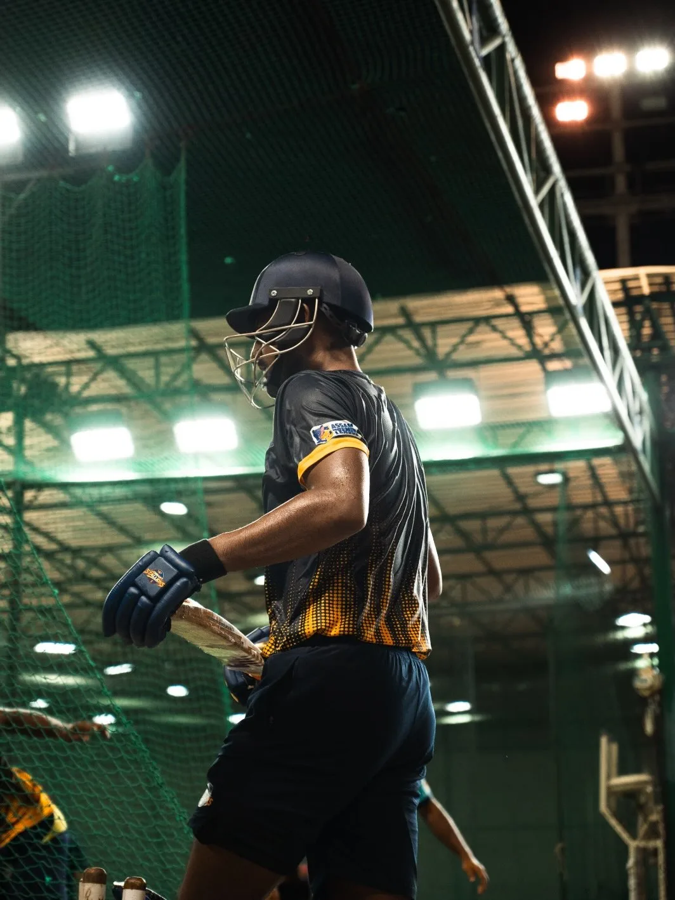
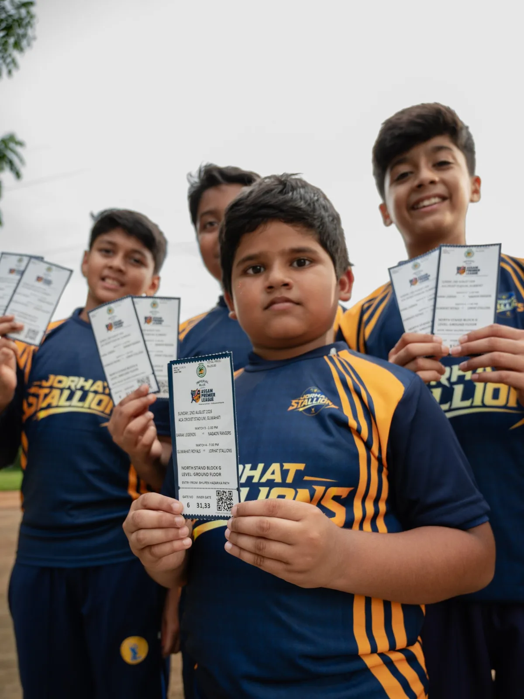
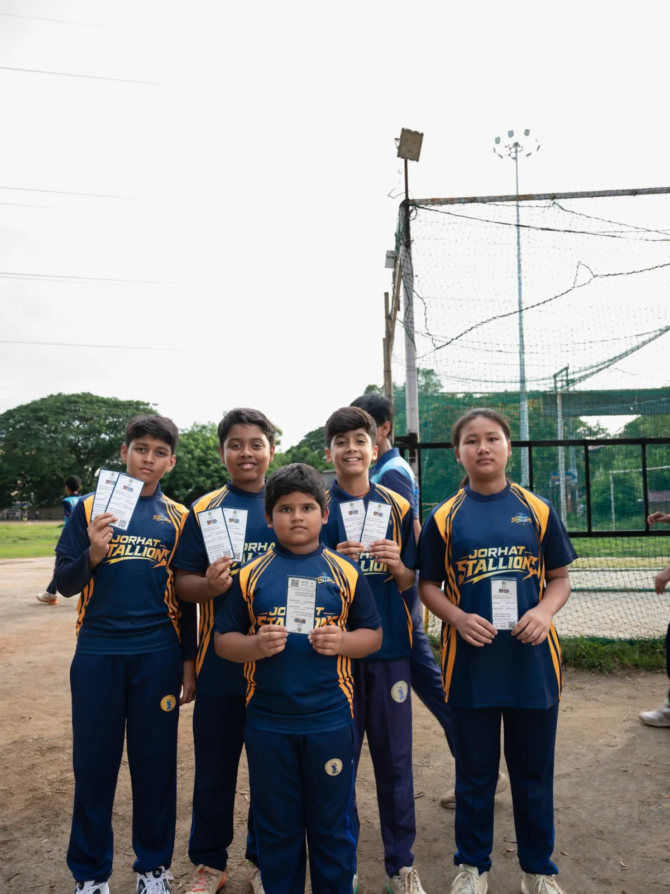
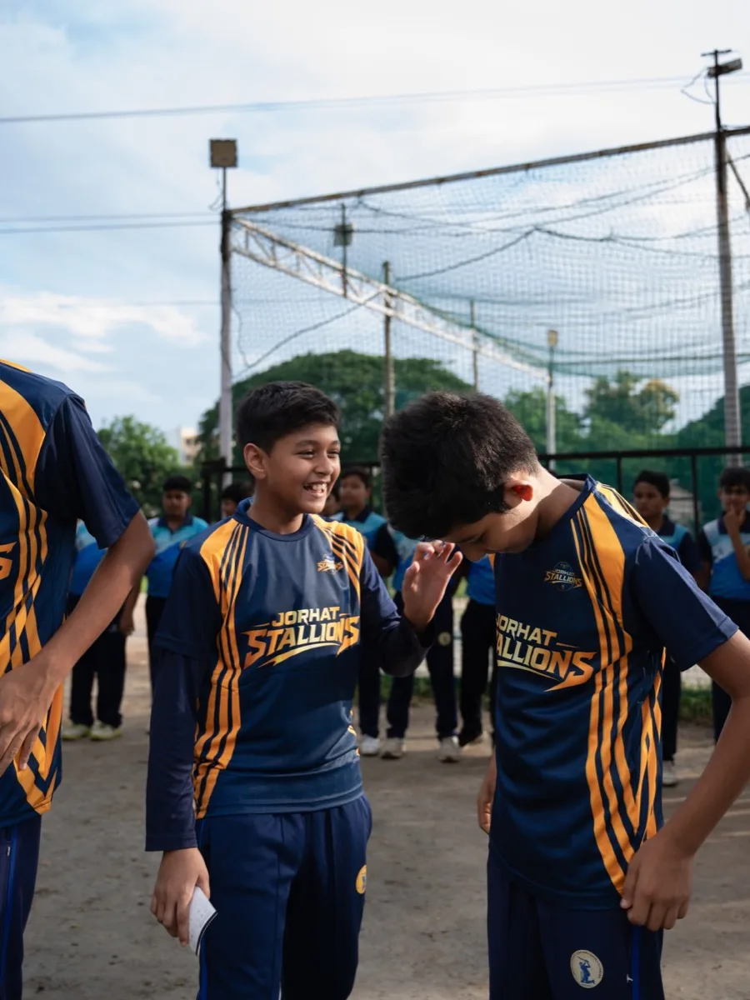
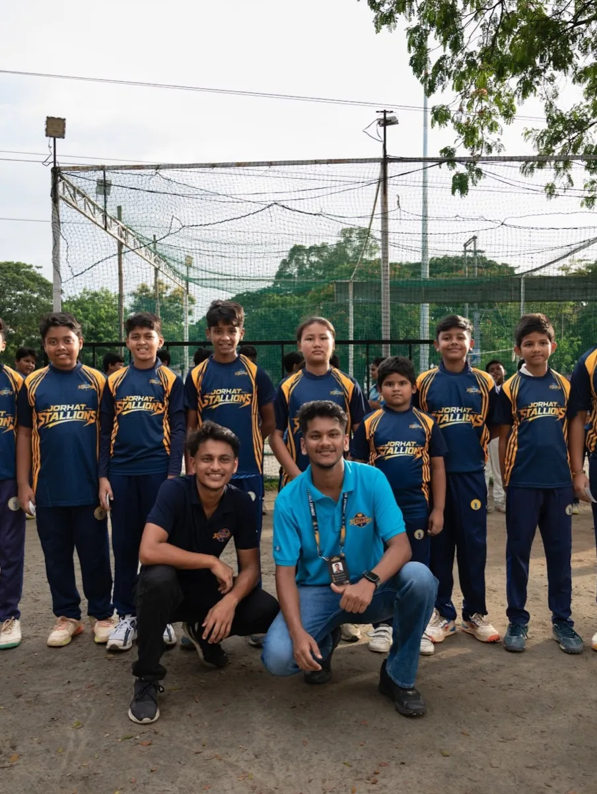
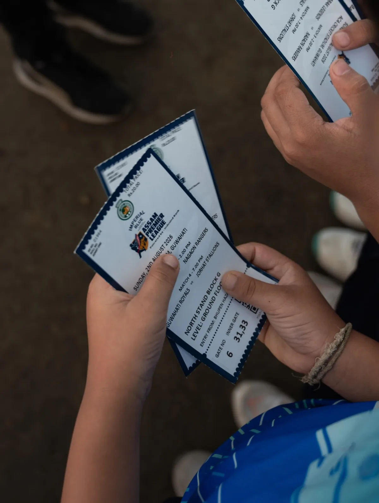
Capturing the spirit of the game
through stories that inspired
supporters, celebrated the team,
and strengthened the Jorhat
Stallions brand.